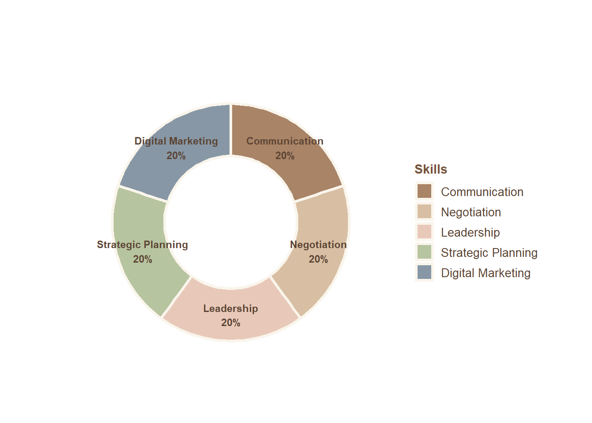
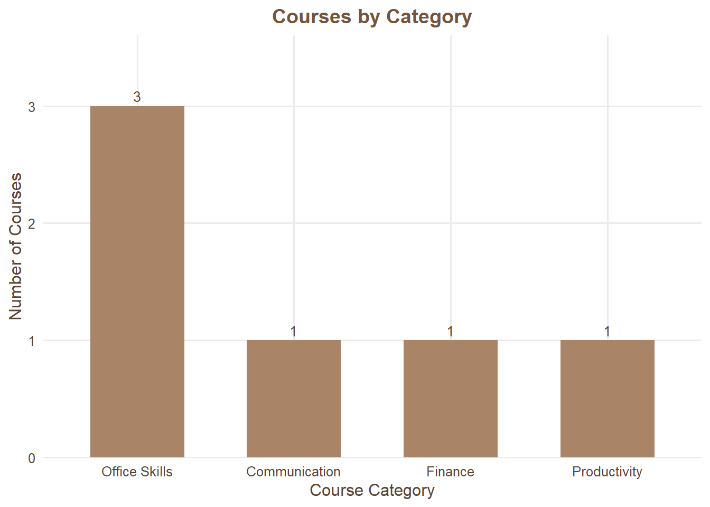

My Life Dashboard
My personal journey in education, career, skills, and professional development
NUTTANAN SAE-WEE
International College of Digital Innovation, Chiang Mai University
Student ID: 622415007
Data Updated: 24 October 2026
Overview
💼
Experience
5 Years
Professional Experience
🛠
Skills
5
Unique Skills
📚
Courses
6
Key Courses
🎯
Focus
Business Development
Career Direction
Experience
Key Insight: The role(s) with the longest experience is/are Business Owner, Sales Representative, with 2 year(s) of experience.
Introduction Video
Personal Growth & Self-Improvement
Small habits that make a big difference in physical health, mental well-being, energy, and daily productivity.
Why Not Be Better You?
Explore 7 simple habits and practical exercises to build a healthier, happier, and more productive lifestyle.
Skills Overview

Key Insight: Communication, Digital Marketing, Leadership, Negotiation, Strategic Planning is associated with the highest number of records in the dataset.
Courses Overview
Number of courses completed across selected categories.

Key Insight: The category with the most courses is Office Skills.
Course Data Explorer
Explore the course records using search, sorting, and pagination.